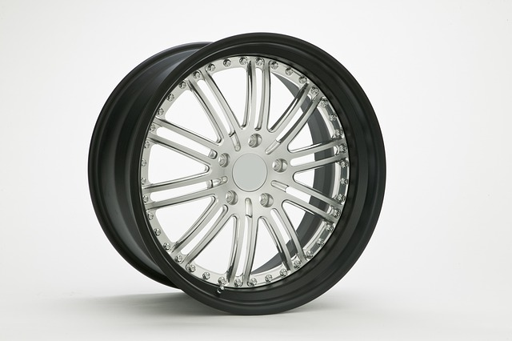

Há cerca de seis mil anos, alguém na Mesopotâmia teve uma ideia simples e revolucionária: um disco que gira reduz o atrito e multiplica a força humana. Milênios depois, um punhado de engenheiros conectou computadores para trocar pacotes de dados. À primeira vista, nada mais distante — um pedaço de madeira e um emaranhado de cabos e sinais. Mas, no fundo, a roda e a internet resolvem o mesmo tipo de problema: a distância.

Artigo sobre a história das rodas
A roda encurtou o espaço físico. Transportar grãos, pedras ou pessoas deixou de exigir força bruta constante; um eixo giratório fez o trabalho pesado. A internet encurtou o espaço da informação. Enviar uma ideia, uma imagem ou uma voz para o outro lado do planeta deixou de depender de mensageiros, navios ou meses de espera; um clique faz o trabalho.
Em ambos os casos, a inovação não foi apenas técnica — foi social. A roda permitiu comércio em maior escala, cidades mais distantes entre si, impérios que se comunicavam por estradas. A internet permitiu economias globais instantâneas, comunidades sem fronteiras, conhecimento acessível a qualquer pessoa com uma conexão.
A roda é um objeto: você pode tocá-la, vê-la girar. A internet é uma rede invisível de protocolos e infraestrutura — sua presença só se percebe pelo efeito. Além disso, a roda levou séculos para se espalhar por diferentes civilizações; a internet, em poucas décadas, já conecta metade da humanidade.
Há também uma diferença de ritmo de transformação: a roda mudou lentamente a vida cotidiana, ao longo de gerações. A internet mudou hábitos, empregos e relações em questão de anos.
Ambas são, no fundo, tecnologias de conexão. Uma une lugares; a outra une pessoas e ideias. E, como toda grande invenção, trouxeram progresso e também novos desafios — de estradas desgastadas por excesso de tráfego a redes sobrecarregadas por desinformação. A humanidade segue girando, de um jeito ou de outro, em busca de encurtar distâncias.
Curiosamente, a física por trás da roda pode ser resumida em uma fórmula simples: a energia cinética de um objeto em rotação é dada por:
E = 1/2mv2
Onde a velocidade aparece elevada ao quadrado (v2) — um pequeno sobrescrito que faz toda a diferença na quantidade de energia envolvida.
Já os cabos que sustentam a internet moderna dependem de materiais como a sílica, cuja fórmula química é:
SiO2
O índice subscrito "2" indicando que cada átomo de silício se liga a dois átomos de oxigênio, formando a fibra óptica por onde viajam os dados.
Se vi mais longe foi por estar de pé sobre ombros de gigantes.
Escreva("Roda")